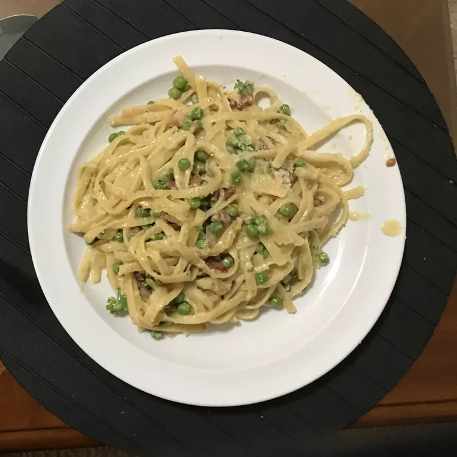

Classic Carbonara with Pancetta

Quick and creamy carbonara, made the proper way.
This is the classic version of pancetta carbonara
I grew up eating. Serve it piping hot, tossed
ith extra Parmesan cheese and chopped Italian parsley.
Ingredients
- 4 eggs, lightly beaten
- 2 cups heavy cream
- 1 cup freshly grated Parmesan cheese
- 1 (16 ounce) package penne pasta
- 1 tablespoon olive oil
- 1 onion, chopped
- ½ pound sliced pancetta, chopped
- ½ teaspoon ground nutmeg
- ½ cup pine nuts, toasted
- ½ teaspoon salt
- 1 teaspoon black pepper
- ¾ cup chopped Italian flat leaf parsley
- ½ cup freshly grated Parmesan cheese
Steps
-
Whisk together eggs, cream, and 1 cup Parmesan
cheese in a bowl. Set aside.
-
Bring a large pot of lightly salted water to a
boil. Add pasta; cook until al dente, 8 to 10
minutes. Drain pasta; return it to the pot off
heat and cover to keep warm.
-
Meanwhile, heat olive oil in a large skillet
over medium heat. Add onion and cook until
ranslucent, about 8 minutes. Transfer onion to
a bowl; cover to keep warm.
-
Cook pancetta in the same skillet over medium
heat until browned; toss with nutmeg. Drain
on paper towels.
-
Combine pasta, onion, pancetta, pine nuts, salt
and pepper in the same large skillet over low
heat. Slowly stir in egg mixture, tossing gently,
so eggs don't scramble. Cook until just heated
through.
-
Remove from heat and toss with parsley and remaining
1/2 cup Parmesan cheese. Serve immediately.
Home